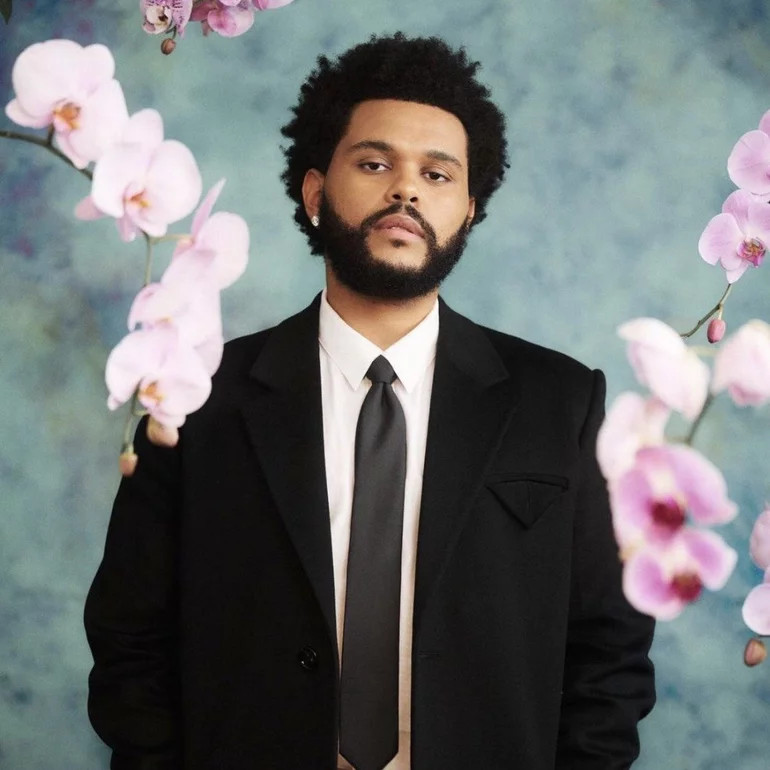

The Weeknd: De las sombras al estrellato
Biografía de The Weeknd: Abel Makkonen Tesfaye
¿Quién es The Weeknd?
Abel Makkonen Tesfaye, quien se hace llamar en el medio artístico The Weeknd, es un cantante, compositor y productor canadiense de origen etíope, nacido en Toronto, Ontario, Canadá, el 16 de febrero de 1990. En 2010 se da a conocer en la escena musical tras lanzar una serie de sencillos en YouTube de manera anónima; también a partir del éxito con canciones como "Call Out My Name", "The Hills" y "Starboy".
Significado del nombre
En sus inicios el cantante era conocido como Tesfaye, luego hace el cambio a The Weeknd. El nombre artístico The Weeknd, en español "Fin de semana", se deriva de su experiencia al abandonar la secundaria a la edad de 17 años, cuando él y un compañero de clases dejaron la escuela un fin de semana y nunca regresaron. La ortografía se modificó para evitar diatribas legales con una banda canadiense llamada precisamente 'The Weekend'.
Niñez, Juventud y Vida Familiar
The Weeknd es hijo de Makkonen y Samra Tesfaye, una pareja de emigrantes etíopes que llegaron a Canadá en los pasados años ochenta. El niño fue criado en una familia de bajos recursos socio económicos, su madre trabajó en varios sitios para aportar al sustento de la familia y, dado que el padre abandonó el hogar, su abuela materna se encargó del cuidado de él. En su adolescencia el futuro cantante consumió marihuana, además de otras drogas muchos más fuertes. Asistió a las escuelas West Hill Collegiate Institute y Birchmount Park Collegiate Institute, aunque nunca obtuvo un título.
Inicios de The Weeknd en la Música
En 2010, cuando todavía era reconocido como Tesfaye, The Weeknd se inició en el mundo musical tras subir, de manera anónima, varias canciones a YouTube. Al año siguiente estrenó tres mixtapes, titulados "House of Balloons", "Thursday" y "Echoes of Silence", que en poco tiempo se convirtieron en éxitos. Más adelante, con un camino recorrido, The Weeknd estrenó su primer trabajo recopilatorio "Trilogy", que contiene treinta pistas remasterizadas de sus mixtapes, además de un par de piezas nuevas.
Género musical
El género musical que identifica a The Weeknd es el R&B. También ha experimentado con pop, hip hop y pop fussion; además de incorporar indie y música electrónica. Su trabajo musical también se ha etiquetado como R&B alternativo.
Trayectoria y Legado
A finales de 2010, The Weeknd publicó una serie de sencillos como "What You Need", "Loft Music" y "The Morning", lo que le permitió darse a conocer oficialmente. Realizó su primera actuación en el Mod Club de Toronto y colaboró con Drake en el exitoso álbum "Take Care".
Durante 2011, The Weeknd lanzó varios mixtapes de forma gratuita a través de su página web. En marzo lanzó "House of Balloons" y en agosto presentó "Thursday". En diciembre, lanzó "Echoes of Silence". Estos tres trabajos fueron posteriormente reunidos en un conjunto llamado "Balloons Trilogy" en 2012.
En 2012, The Weeknd realizó una exitosa gira por varios países, incluyendo Estados Unidos, España, Portugal, Inglaterra y Francia. También interpretó una versión de "Dirty Diana" de Michael Jackson durante su estadía en Londres. En ese mismo año, firmó un contrato con la disquera Republic Records y estableció su propia compañía, "XO".
En septiembre de 2013, The Weeknd lanzó su álbum "Kiss Land", que incluía el sencillo homónimo. Participó en el tour de Drake y logró el número dos en la lista Billboard 200 de Estados Unidos. También formó parte de la banda sonora de "Los Juegos del Hambre: En llamas" y colaboró con Sia en "Elastic Heart".
En 2013, The Weeknd se unió a Justin Timberlake en su gira "The 20/20 Experience World Tour" y en 2014 lanzó su sencillo "Often". Colaboró con Ariana Grande en "Love Me Harder" y lanzó el exitoso sencillo "The Hills" en mayo de 2015.
En agosto de 2015, The Weeknd lanzó su segundo álbum de estudio, titulado "Beauty Behind The Madness", que alcanzó el número uno en el Billboard 200. El álbum recibió numerosos elogios y se convirtió en el disco más reproducido en streaming de 2015.
Después del éxito de su segundo álbum, The Weeknd anunció una gira en colaboración con Travis Scott, Banks y Halsey. También fue invitado a Saturday Night Live y lanzó su álbum "Starboy" en colaboración con Daft Punk.
The Weeknd continúa su carrera artística y recientemente lanzó su álbum "My Dear Melancholy".
Datos Personales
- Nombre Verdadero: Abel Makkonen Tesfaye
- Nombre Artístico: The Weeknd
- Fecha de Nacimiento: 16 de febrero de 1990 (Edad: 33)
- Nacionalidad: Canadiense
- Ascendencia: Etíope
- Donde Nació: Toronto, Ontario, Canadá
- Donde Vive: Canadá
- Género(s): R&B contemporáneo, hip hop
- Actividad: 2010 - Actualidad
- Instrumentos: Voz, teclado
- Ocupación: Cantante, productor discográfico
- Disquera(s): XO Records, Republic Records, Universal Republic Records
- Cónyuge/Pareja: Selena Gómez (2017 - 2017); Bella Hadid (2015 - 2016) - (2018 - 2019)
- Padres: Makkonen y Samra Tesfaye
- Tipo de voz: Contratenor
- Página Oficial: www.theweeknd.com